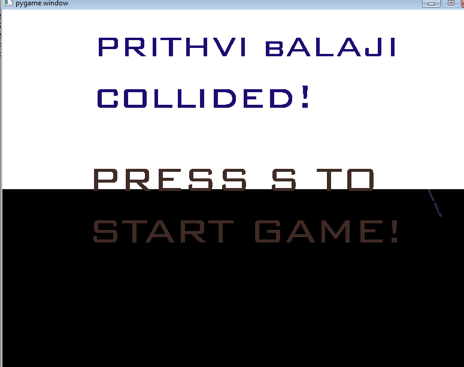
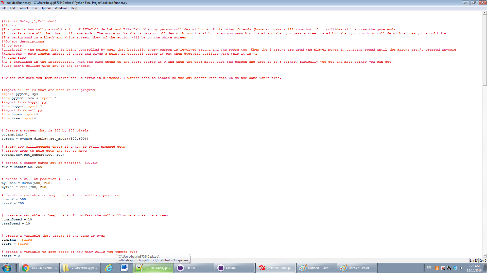

Final Project Content
 
Description of python final project
The game is basically a combination of IFS-Collide Lab and Tile Lab. When my person collides with one of his other friends (humans), game still runs but if it collides with a tree the game ends. It tracks score all the time until game ends. The score works when a person collides with you its -1 but when you pass him its +1 and when you pass a tree its +2 but when you touch or collide with a tree you should die. The background is a black and white screen. Most of the action will be on the white screen
Concepts Learned
- Repetition of concepts we learned in the past (collison, many objects , etc )
- Using a timer without importing timer.py